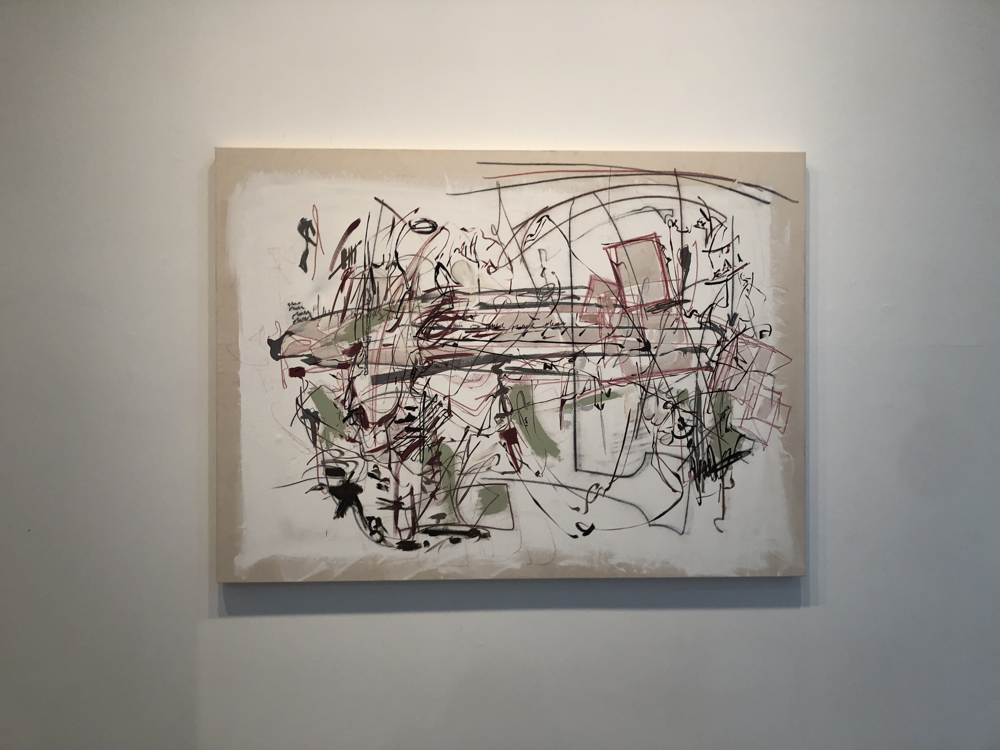

not a tourist.
This exhibition is Carmen Neely’s exploration of the idea of feeling like a tourist and “cultural otherness.” Neely explores this theme by combining souvenir items with expressive brush strokes and scrawled words. Neely also recreates these items as if to blur the lines between authentic and imitation. This is commentary on mass-market consumer goods found in tourist areas and how we keep souvenirs: “It sits on the shelf as a trophy and commemorates a type of conquest.” Neely grapples with the idea of being able to “claim a space as your own,” when one is made to feel like an outsider.
What I found very interesting about these pieces, and the one I was most drawn too, was that I didn’t even notice the cliché phrases woven into the pieces. There is so much that can go unnoticed amongst the chaos of these pieces which I believe reflects how we can gloss over cultural sensitivities and gawking that accompany traveling and tourism. The frantic nature of these pieces seem to highlight how inundated we can become with information while traveling and the repercussions of a fast paced, haphazard introduction to a new place or culture. This wildness is shown through loose strokes of black, red and green that were clearly made with speed and freedom. The darker colors allude to a more ominous outcome of our decisions while the green could represent the innocence we enter with. I can not read the words in this piece specifically but I believe that is intentional for we can speak without listening to ourselves. I really enjoy the emotion and presence of this piece.